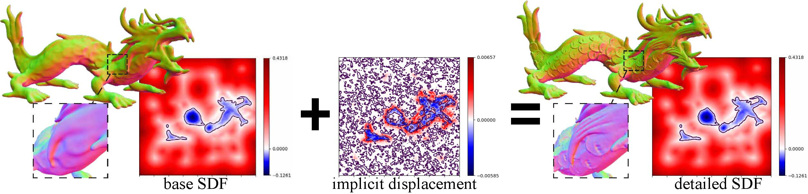

Geometry-Consistent Neural Shape Representation with Implicit Displacement Fields
 Unsupervised frequency decomposition of 3D geometry
Unsupervised frequency decomposition of 3D geometry
Abstract
We present implicit displacement fields, a novel representation for detailed 3D geometry. Inspired by a classic surface deformation technique, displacement mapping, our method represents a complex surface as a smooth base surface plus a displacement along the base’s normal directions, resulting in a frequency-based shape decomposition, where the high frequency signal is constrained geometrically by the low frequency signal. Importantly, this disentanglement is unsupervised thanks to a tailored architectural design that has an innate frequency hierarchy by construction. We explore implicit displacement field surface reconstruction and detail transfer and demonstrate superior representational power, training stability and generalizability.
- Overview video
- Motivation
- Method
- Results
-
Overview video
Motivation
How to best represent 3D geometry in neural networks? Objects we encounter in real life distinguish themselves with their intricate geometric details. Is there a compact way to capture these intricacies and allow efficient downstream tasks?
Implicit neural networks, also known as coordinate-based networks, has gained a lot of attraction due to their theoretically infinite resolution. But in reality, due to the spectral bias of neural nets, high-frequency signals (surface details) still get lost.
The research community combat this issue focusing two aspects: spatial partition and frequency transform.
| Spatial Partition | Frequency Transform |
|---|---|
| Divides the holistic implicit function into many simpler ones located in cells of some spatial structures | Transforms the signal passing through the network to a high-frequency via either periodic activation functions or Fourier Transformation |
| DLS1, NGLOD2 | SIREN3, Position Encoding4 |
| Incompact, memory demands grows cubically with the spatial resolution, may have issues at the cell boundary | Hard to train, local minima |
Method
Implicit Displacement Fields
 We decompose the 3D geometry into a smooth base surface, represented as a low-frequency signed distance function, and a continuous high-frequency implicit displacement field, which offsets the base iso-surface along the normal direction.
💡 Frequency-based partition of the 3D geometry – decompose the shape into a smooth base surface, represented as a low-frequency signed distance function, and a continuous high-frequency implicit displacement field, which offsets the base iso-surface along the normal direction.
Our idea took inspiration from Displacement Mapping, a classic technique in Computer Graphics to model surface details.
In this image below, the bumps on the sphere is added by offsetting samples of the sphere along the normal directions by a distance obtained (with interpolation) from the height map on the top-left.

Displacement Mapping: adding details to a sphere.
Displacement mapping is discrete and defined on the surface. So in this paper, we are tasked to extend the definition of displacement mapping to the continous $\mathbb{R}^3$ domain. This is illustratively shown in the figure below (please check our paper for the formal definition and proofs).
Implicit displacement field $d: \mathbb{R}^3 \rightarrow \mathbb{R}$ maps two equi-isosurfaces $\mathcal{S}_{\tau}$ and $\hat{\mathcal{S}}_{\tau}$; height map in the classic displacement mapping is a special case $\tau_{0}$.
Equi-isosurface mapping: $f\left(\mathbf{x}\right) = \hat{f}\left(\mathbf{x}+d\mathbf{n}\right)$ and $\hat{f}\left(\hat{\mathbf{x}}\right) = f\left(\hat{\mathbf{x}}+\hat{d}\mathbf{n}\right)$.
{kind=link}
Implicit displacement field in 1D.
Networks
How do we separate the low-frequency base SDF and high-frequency implicit displacement field? We notice that this is at its core a frequency decomposition of the geometry. At the same time, we observe that the output signal’s frequency of SIRENs (networks with period activation functions) can be controlled easily with their frequency paramter $\omega$ in the sine activation $x\mapsto\sin\left(\omega x\right)$.
💡 We separate the low-frequency base and high-frequency detail in an unsupervised manner by leveraging SIREN’s inherent frequency capacity, which can be modulated conveniently by the hyper-parameter $\omega$ in the sine activation $x\mapsto\sin\left(\omega x\right)$. In other words, we approximate base SDF with a low-frequency SIREN (e.g. $\omega=15$) and the displacement field with a high-frequency SIREN (e.g. $\omega=60$ ).
Let’s denote the base SDF network as $\mathcal{N}^{\omega_B}$ and the displacement network as $\mathcal{N}^{\omega_D}$. The detailed SDF (the one we want to approximate) is composed the following steps:
- compute the normal direction $\mathbf{n} = \frac{\nabla \mathcal{N}^{\omega_B}\left(\mathbf{x}\right)}{\lVert\nabla \mathcal{N}^{\omega_B}\left(\mathbf{x}\right)\rVert}$,
- compute the displacement distance $\hat{d} = \mathcal{N}^{\omega_D}\left(\mathbf{x}\right)$,
- compute the SDF at the displaced position $f(\mathbf{x}+\hat{d}\mathbf{n}) = \mathcal{N}^{\omega_B}\left(\mathbf{x}+\hat{d}\mathbf{n}\right)$, which per our definition is equal to the detail SDF $\hat{f}(\mathbf{x})$.
Notice that since both $\mathcal{N}^{\omega_B}$ and $\mathcal{N}^{\omega_D}$ are included in the steps, we can train them together by either directly comparing $\hat{f}(\mathbf{x})$ with the ground truth SDF or indirectly by solving eikonal constraints with boundary conditions.
In the paper, we also introduced 3 other techniques that we embedded in the network and training to improve the result and training stability. Go check them out! 😉
Transferability
One advantage of using classic displacement mapping to create surface details is that once the mapping, known as surface parameterization, from the base surface to the height map is created, the displacement is independent of deformations of the base surface. We emulate this effect for IDF by replacing the coordinates input to the displacement net, which is obviously non-transferable as it’s bound to the global coordinate frame, with transferable features.
Comparison between transferable and non-transferable implicit displacement.
Results
Let’s first look at the detail representation compared to other methods:
Quantitative evaluation. Note that NGLOD (LOD6) requires storing more than 300 times as many parameters as our model.
{kind=link}
Here’s some visual examples.
{kind=link}
{kind=link}
{kind=link}
{kind=link}
Future work
We hope to explore further in the realm of implicit shape editting! I’m looking forward to your inputs and ideas for collaborations.
- Chabra, Rohan, et al. “Deep local shapes: Learning local sdf priors for detailed 3d reconstruction.” European Conference on Computer Vision. Springer, Cham, 2020. ^
- Takikawa, Towaki, et al. “Neural geometric level of detail: Real-time rendering with implicit 3D shapes.” arXiv preprint arXiv:2101.10994 (2021). ^
- Sitzmann, Vincent, et al. “Implicit neural representations with periodic activation functions.” Advances in Neural Information Processing Systems 33 (2020). ^
- Mildenhall, Ben, et al. “Nerf: Representing scenes as neural radiance fields for view synthesis.” European Conference on Computer Vision. Springer, Cham, 2020. ^